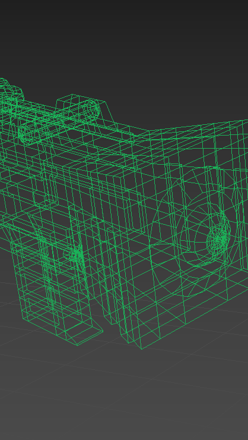

イカガール
https://youtu.be/CUjD0Dlhue0自主制作で Splatoon2 のガールをモデリングしました。
課題で作成したものをブラッシュアップし、より可愛くしました。
制作期間：3ヶ月 キーワード splatoon × CG


ガールモデリング
メッシュスムーズをかけた為体のポリゴンは多くなっています。
帽子やブキ、靴などはローポリで作っています。


UVW アンラップ（体）
ゲーム画面を見ながら再現しました。
肌色は選択できる中で一番白い肌色をモデルにしました。
UVW アンラップ（頭）
髪色はオレンジ色が一番好きなので、オレンジを選びました。
UVW アンラップを描いた中で一番髪が難しく色々な資料を見ながら描きました。
UVW アンラップ（目）
目は一番上手く描けたと思います。
ゲーム画面を見ながら再現しました。
UVW アンラップ（帽子）
ホタックスのクラゲーダーキャップを再現しました。
アタマギアの中でもこのギアの見た目が一番好きです。
UVW アンラップ（服）
ホタックスのホタパーカーグレーを再現しました。
フクのギアの中で見た目が一番可愛かったのでモデルにしました。